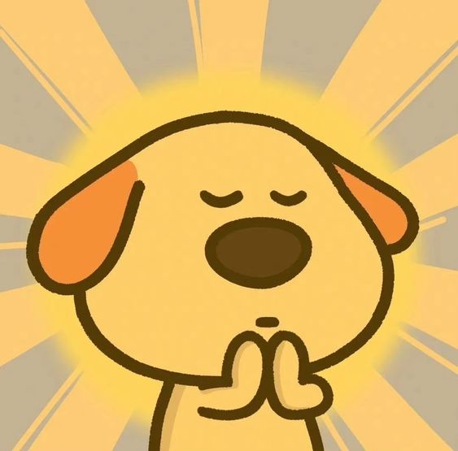
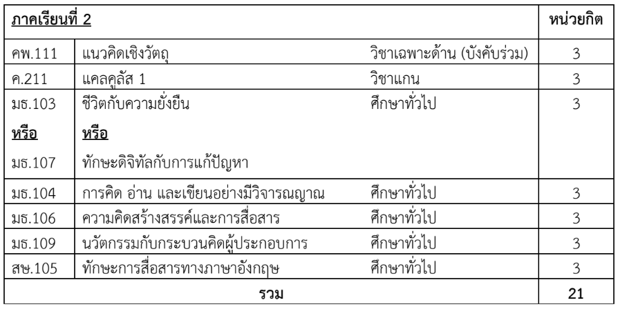
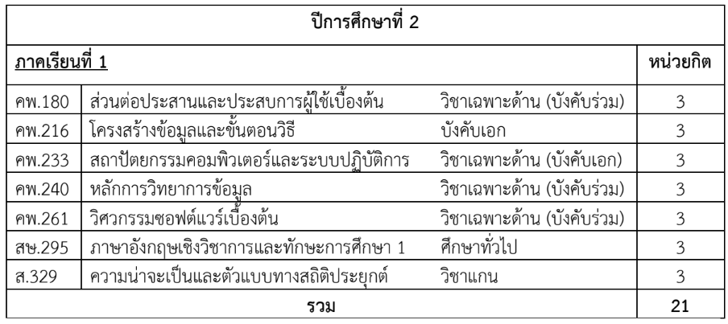
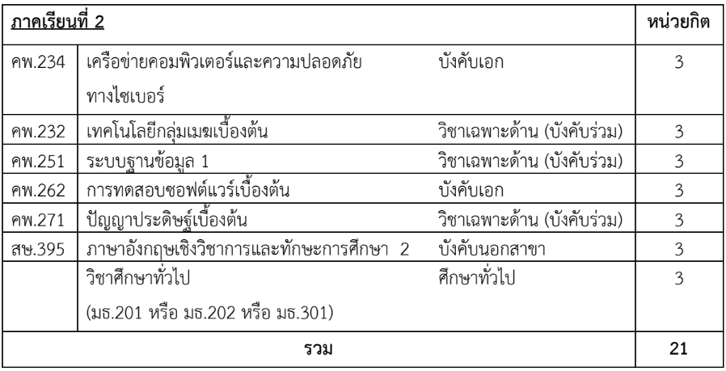
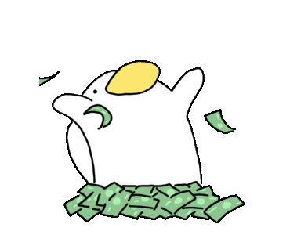
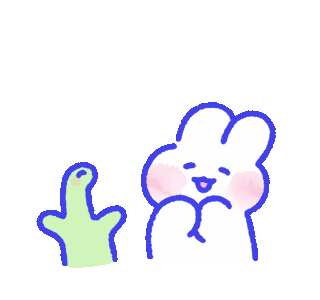

My journey of 4 years at CSTU. !!

ฉันจะพาคุณมาดูเส้นทาง 4 ปีของฉันที่ CSTU ! 😁
ถ้าพร้อมแล้ว เตรียมตัวรัดเข็มขัด แล้วไปกันเลยยย 🍀
(ทุกอย่างจะผ่านไปไวมากก)
✨ ปี 1 ของแป้ง ✨
"ตนเป็นที่พึ่งแห่งตน"😁
> คติประจำใจของฉันยังคงใช้อยู่กับการเรียนเสมอ
> ตอนนี้ฉันจะสอบกลางภาคแล้ว ฉันสังเกตเห็นตัวเองว่าเป็นคนชอบดองงาน แถมขี้ลืม
> ฉันจึงจะตั้งเป้าหมายดังนี้
1.ทวนสิ่งที่เรียนภายในวันนั้นหรือ1วันหลังจากนั้น เพื่อไม่ให้ลืมสิ่งที่เรียนจะได้ไม่ต้องเสียเวลาอ่านใหม่ตั้งแต่แรก
2.พยายามทำงานตั้งแต่ที่ได้รับมอบหมายให้เสร็จก่อนส่งเสมอ
3.หาความรู้นอกห้องเรียน ไม่ว่าจะเป็นกิจกรรมหรือความรู้ผ่านอนเทอร์เน็ตก็ได้ เพื่อพัฒนาตัวเองอยู่เสมอ
4.หาความรู้ล่วงหน้า ฉันจะทวนวิชาแคลคูลัสก่อนจะเริ่มเรียนเทอม2 และวิชาอื่นๆเท่าที่จะเตรียมตัวก่อนเรียนได้

"สิ่งที่ฉันเขียนข้างต้นคือเป้าหมายของฉัน ณ ตอนนี้ ฉันหวังว่าจะทำมันได้ 😅"

✨ ปี 2 ของแป้ง ✨


> สำหรับปีสองฉันจะทำตามแพลนปี 1
> เพิ่มเติมคือพยายามทำกิจกรรมมากขึ้นเพื่อค้นหาว่าตัวเองชอบทำอะไร เพื่อที่จะตัดสินใจเลือกเรียนเมื่อจะขึ้นปี 3 ได้
> เพราะปี3 ต้องเลือกระหว่างจะทำแผนหัวข้อพิเศษหรือแผนสหกิจศึกษา
> ตอนนี้ฉันก็คิดไว้อยู่ แต่ยังไม่ค่อยมีความรู้เกี่ยวกับเรื่องนี้มากนัก ดังนั้นในตอนที่อยู่ปี 2 ฉันอยากจะทำกิจกรรมเยอะเพื่อค้นหาตัวเอง
✨ ปี 3 ของแป้ง ✨
"ความรับผิดชอบต้องมากขึ้น"
> ฉันคิดตามที่เขียนเลย อยากจะมีความผิดชอบมากขึ้นเพราะโตขึ้นมากแล้ว จะวางแผนการทำงานให้ดี!
> ในตอนฉันปี 2 ก็คงวางแผนว่าจะเรียนแผนไหนเอาไว้แล้ว ดังนั้นแพลนของฉันยังคงทำตามปี1 แต่จะต้องมีความรับผิดชอบมากขึ้น
เพราะ "ความรับผิดชอบ" เป็นสิ่งที่ทุกอาชีพควรจะมี 😁
✨ ปี 4 ของแป้ง ✨
" จบที่ปีนี้เถอะ🤣"
> จากแพลนที่วางไว้ในปีก่อนๆ ฉันคิดว่าคงเป็นคนที่พร้อมทำงานมากขึ้นแล้ว
> สำหรับแพลนในปีนี้ คือการเรียนให้จบและได้เริ่มทำงานที่ชอบสักที
ฉันอยากให้ผลจากการที่พยายามในปีก่อนแสดงผลที่ตัวฉัน ฉันจะเป็นที่มีความรับผิดชอบมากขึ้นๆไปอีก
ฉันคิดว่า ฉันน่าจะทำตามที่แพลนเอาไว้ได้ แค่คิดก็ภูมิใจในตัวเองแล้ว😁
และเหนือสิ่งอื่นใด ฉันอยากจะทำงานที่มีรายได้เยอะๆ นั่นคือเป้าหมายในปี 4 ของฉัน!

> และสำหรับปีต่อๆไปของฉันและคนที่อ่านเว็บนี้ ขอให้มีแต่ความโชคดีนะ 🍀
Bye Bye.
